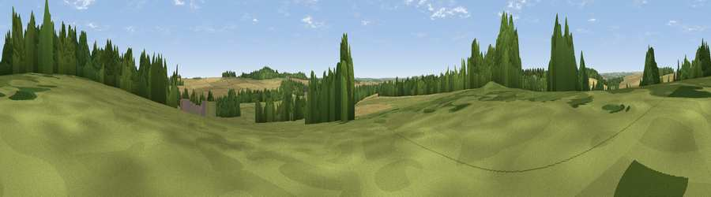

Mill Hill
#43510 in England · top 89% of its area beats it · near Moor CrichelThe view, rendered

A 360° render of this exact spot computed from the terrain model, tree cover and land cover — summer colours, afternoon light, calibrated against photographs of famous viewpoints. Real trees, hedges and buildings will differ in detail.
The panorama
Grey silhouette: terrain skyline in each direction (720 bearings, Earth curvature and refraction included). Dashed green: skyline with trees (+15 m) and buildings (+8 m) as obstacles. Blue strip: how far the ground is visible on each bearing.
Where the view opens
Wedge length = distance to the farthest visible ground on that bearing (vegetation-aware). Rings at 10, 25 and 50 km.
What fills the view
49% cropland · 34% grassland · 17% woodland ·
Angular shares of the visible panorama (visual magnitude), not map area. Landscape diversity 0.45 (0–1 Shannon).
Key numbers
More beautiful places nearby
The staircase of upgrades: each row has a higher view potential than everything closer. Driving times are estimates from straight-line distance, calibrated against real road routing — check an actual route before setting out.
| Place | Direction | Drive | Score |
|---|---|---|---|
| Chalbury Hill | SE · 2 km | ~6 min | 56.5 |
| Viewpoint near Cranborne | NNE · 9 km | ~18 min | 65.0 |
| Trow Down | NNW · 14 km | ~25 min | 67.5 |
| Monk's Down | NNW · 14 km | ~26 min | 74.4 |
| Viewpoint near Berwick St John | NNW · 14 km | ~26 min | 78.2 |
| Viewpoint near Harman's Cross | S · 27 km | ~43 min | 80.8 |
| Nine Barrow Down | S · 27 km | ~44 min | 81.1 |
| Ballard Down | S · 27 km | ~44 min | 83.2 |
50.87680, -1.99918 · source: osm peak · position refined by local search. Computed location — check access rights before visiting.